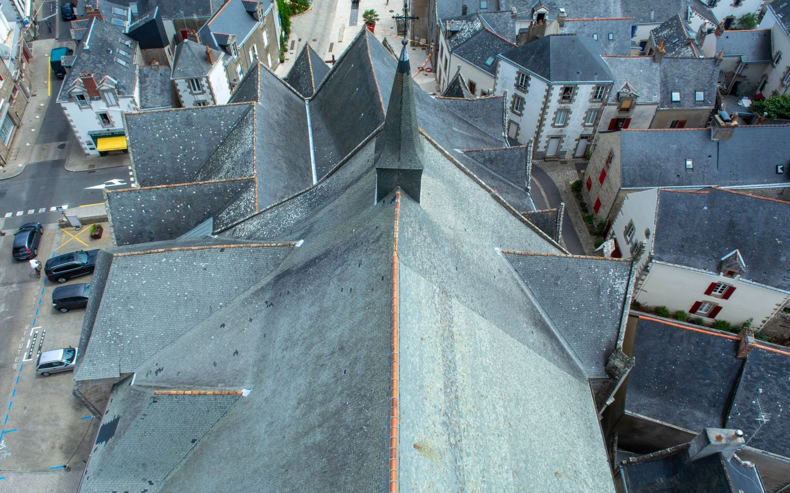

Couvreur ardoise · Brière · Loire-Atlantique
Couvreur ardoise à Pontchâteau, Missillac et Saint-Nazaire
Ardoises glissées, fuite, faîtage abîmé, zinguerie à reprendre ou toiture à refaire : Laurent intervient sur toutes les toitures en ardoise à 25 km autour de Missillac, du diagnostic jusqu’à la fin du chantier.
- ✓ Diagnostic sur le toit, pas depuis le sol
- ✓ Un seul interlocuteur : l’artisan
- ✓ Déplacement et devis gratuits
- ✓ Spécialiste de la toiture en ardoise
Laurent vous rappelle dans la journée.
06 29 25 95 02Appelez directement, il répond.
06 29 25 95 02
Pourquoi ne pas attendre
Un toit en ardoise ne lâche pas d’un coup. Il prévient.
Une ardoise de travers, une tache au plafond, un peu de mortier au pied du mur : les signes sont discrets, et le défaut s’agrandit. Avec les coups de vent d’automne et d’hiver, chaque tempête fait gagner du terrain à l’eau.
L’ardoise glisse
Quand un crochet cède, l’ardoise descend. Le recouvrement se réduit et la pluie poussée par le vent passe dessous.
Le liteau prend l’eau
Un bois humide en permanence se ramollit et ne tient plus les crochets. La réparation devient une réfection.
L’isolant ne protège plus
Une laine mouillée se tasse et ne sèche pas dans des combles fermés. La facture de chauffage suit.
La facture change d’échelle
Quelques ardoises à remplacer à l’automne, un pan à refaire au printemps : entre les deux, il n’y a qu’un hiver de pluie.
Un couvreur qui connaît l’ardoise
Autour de Missillac, de la Brière à la Vilaine, presque toutes les toitures sont en ardoise. Longères en pierre, maisons de bourg, pavillons, maisons de la côte : le matériau est le même, mais il ne vieillit pas partout de la même façon.
Laurent répare et remplace les ardoises au crochet, reprend les faîtages, les noues, les solins et la zinguerie, et refait la couverture quand le support ne tient plus. Il vous dit franchement ce qui doit être fait, et ce qui peut attendre.
Près de l’estuaire et de la côte, l’air salin ronge les vieux crochets galvanisés. Après chaque tempête, quelques ardoises descendent. Les remettre en place tout de suite coûte peu ; attendre l’hiver coûte un liteau.
Comment ça se passe
- 01Vous appelez
Laurent vous répond lui-même et qualifie l’urgence au téléphone. Si l’eau coule, il vous donne les gestes à faire tout de suite.
- 02Sécurisation
Si nécessaire, il bâche et met hors de danger les ardoises instables, avant toute chose.
- 03Diagnostic sur le toit
Ardoises, crochets, faîtage, noues, solins et zinguerie : tout est contrôlé, photos à l’appui. C’est gratuit.
- 04Travaux + devis
Un devis écrit et détaillé, l’urgent séparé de ce qui peut attendre. Utilisable auprès de votre assurance.
Combien coûtent des travaux sur une toiture en ardoise ?
Aucun couvreur sérieux ne peut chiffrer sans avoir vu le toit. Le prix dépend du nombre d’ardoises à reprendre, de l’état du liteau, du faîtage et de la zinguerie, de l’accès au toit (échafaudage ou non) et de l’urgence de l’intervention.
Sa méthode : il monte sur le toit, établit un diagnostic, puis un devis détaillé, gratuit et sans engagement. Le déplacement est gratuit lui aussi. Vous savez exactement ce que vous payez, et pourquoi. Une réparation ciblée n’a rien à voir avec une réfection complète : le diagnostic sert justement à ne pas vous faire payer plus que nécessaire.
Recevoir mon devis gratuitUn artisan proche de chez vous
Installé à Missillac (44780), Laurent intervient dans un rayon de 25 km : Pontchâteau, Herbignac, La Roche-Bernard, Saint-Gildas-des-Bois, Nivillac, Savenay, Donges, Saint-Nazaire, Guérande, La Baule, Redon et toutes les communes alentour, hameaux compris. Le déplacement pour le diagnostic est gratuit.
Questions fréquentes
Le diagnostic et le devis sont-ils vraiment gratuits ?
Oui, les deux, et sans engagement. Rien n’est facturé pour venir voir, monter sur le toit et remettre un chiffrage écrit.
Vous intervenez seulement sur l’ardoise ?
C’est son métier : couverture, réparation et remplacement d’ardoises, faîtage, zinguerie, recherche de fuite. Pour une toiture d’un autre matériau, appelez quand même : il vous dira franchement si c’est pour lui.
Qui vient sur le chantier ?
Laurent lui-même. Celui qui chiffre est celui qui monte sur le toit.